AEM 6850
Empirical Methods for Applied Economists
Prof. Ariel Ortiz-Bobea
7 · Version control with git
Tuesday, September 15, 2026

Objectives
By the end of this session you can:
- Explain what a repository is: a folder whose history git records, with one copy on your laptop and one on GitHub.
- Create a repository on GitHub and copy it to your laptop as an RStudio project.
- Save a change into the history: edit a file,
git addit,git commitit with a message, andgit pushit to GitHub. - Bring a change made on GitHub down to your laptop with
git pull. - Read
git statusand tell whether a change is only on disk, staged for the next commit, or already committed. - Read a diff and say what changed, including a change a coding assistant made.
- Undo: throw away an edit, unstage a file, fix the message of your last commit.
- Explain what a branch and a pull request are.
Plan for today
- Why version control
- A repository is a folder plus a timeline
- Two copies: your laptop and GitHub
- One change, from your editor to GitHub
- Choosing what a snapshot contains
- Undoing at each place
- Pull, and the push that is refused
- Branches, pull requests, and what stays out of a repository
A folder without version control
analysis_v1.R
analysis_v2.R
analysis_FINAL.R
analysis_FINAL_v2.R
analysis_REALLY_FINAL.R
analysis_FINAL_USE_THIS.R- Which one made Table 2?
- What changed between
FINALandFINAL_v2? - Which one still runs?
Three questions version control answers
- What did I change since the version that worked? You, four months later, when a coefficient moved.
- What exactly did this edit change? A coauthor, or a tool that writes forty lines in ten seconds, hands you a file. The change is what you review, not the file.
- Who changed this line, when, and why? Two people, one script, no emailing of
paper_v3_jane_edits.R.
What a coding assistant’s edit looks like
A coding assistant (Copilot, ChatGPT, Claude) was asked to add one check to a three-line script. This is what it did.
- You asked for the last line.
- Nobody asked for the
-/+pair in the middle: 35 became 9. - What did the assistant change? That is the question for the rest of the day.
git and GitHub are two different things
| git | GitHub | |
|---|---|---|
| What | a program on your laptop | a website |
| Does | takes and keeps snapshots of a folder | keeps a copy of the snapshots and shows them in a browser |
| Needs the internet | no | yes |
| You have used it | not yet | once: add my intro, before class |
A repository is a folder plus a timeline
Make a repository
- github.com → + → New repository. Name
git-practice. Private. Tick Add a README file. Create repository. - One file, one snapshot. GitHub wrote
Initial commit. A repository is born with a timeline of length one. - Pencil on
README.md→ one line → Commit changes… → messageadd my intro. Two snapshots. You did exactly this before class.
Your repository on GitHub
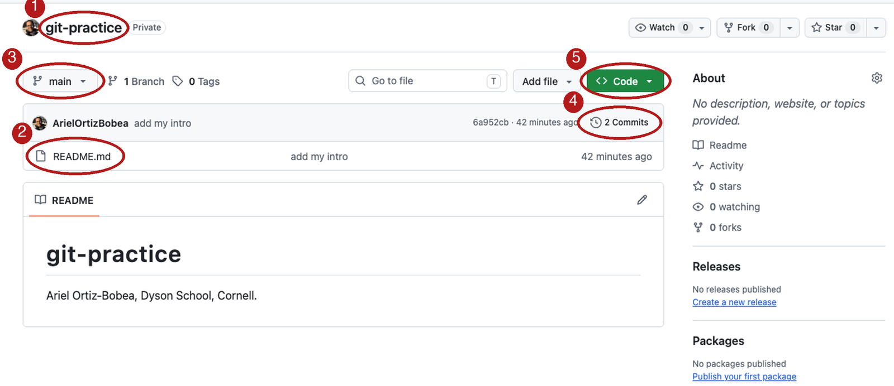
- Name — owner / repository
- Files —
README.md, the only file main— the timeline’s name2 Commits— two snapshots- Code — where a copy comes from
The history: the Commits page
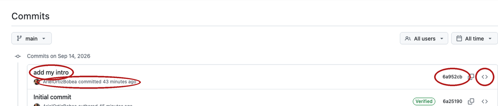
- Message:
add my intro. The only part a human wrote. - Author and when: your username, the date.
- Hash: seven characters of a forty-character ID.
<>: the whole folder as it was then.
One commit, opened: the diff
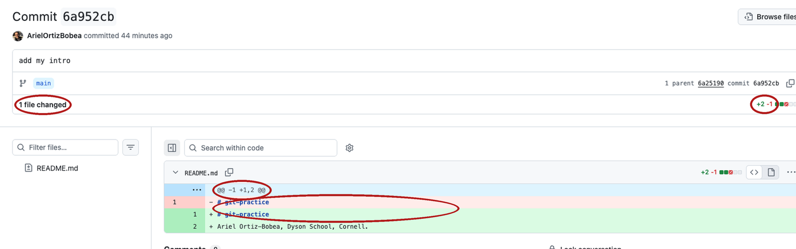
+2 −1— two lines added, one removed- red
-/ green+— the line as it was, as it is @@— where in the file- a diff — two snapshots, line by line. Spot the difference.
How to read a diff
--- a/analysis.R
+++ b/analysis.R
@@ -1,3 +1,4 @@--- a/is the old version,+++ b/the new.@@ ... @@says where in the file. You rarely need the numbers.- A changed line shows as one
-and one+. Read them as a pair. A pure addition is+alone. - Read every
-first. A removal you did not ask for is the dangerous one. - Ask of every diff: is this the change I meant, and only that?
Local and remote: two copies of one timeline
- Clone makes the first copy, once. Git calls the copy it came from
origin. - Push hands your new snapshots to GitHub. Pull brings GitHub’s down.
- Not Dropbox. Nothing moves until you type
pushorpull, andgit statusnever looks at GitHub.
The address of a repository
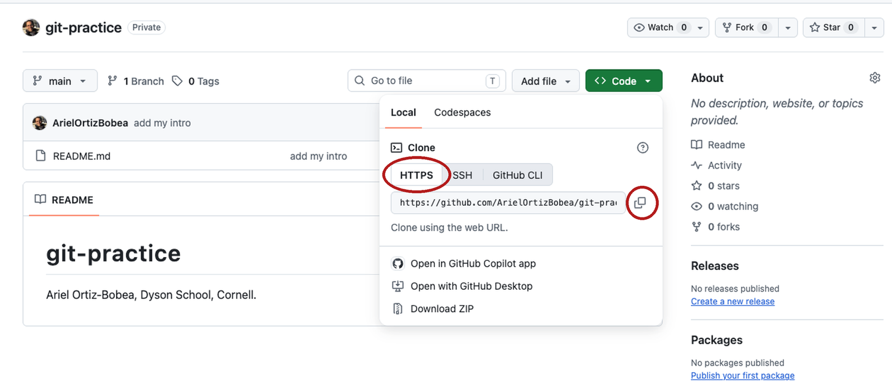
- The URL is the repository’s address. Every clone, push and pull uses it.
- It ends in
.git. That is part of the address, not the hidden folder. - Use the HTTPS tab, not SSH and not GitHub CLI. The token from Before class is what makes HTTPS work.
Clone into an RStudio project
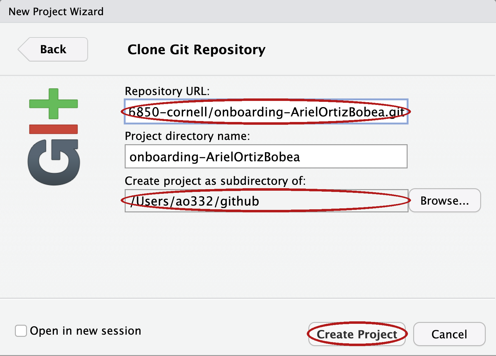
- File → New Project → Version Control → Git. Paste the URL. Subdirectory: Browse… to
github. - Create Project runs one command,
git clone. The clone lands ingithub/git-practice. - The
.Rprojmarks the top folder; R reads paths from there.
The Terminal tab and the Git pane
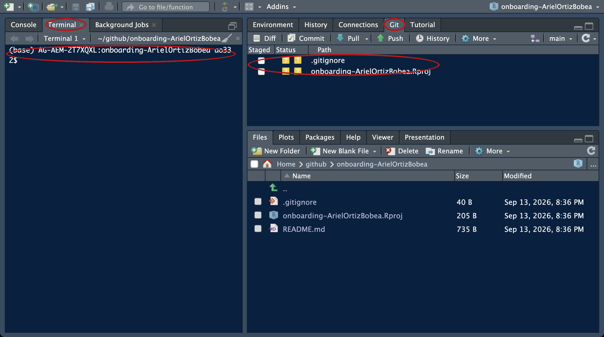
- Tools → Terminal → New Terminal. The prompt shows the project’s name, then
%or$. Type after it, press Enter. - The Git pane top-right shows the same state. Watch it, do not click it, for now.
- For the next ten minutes, watch. You type in the exercise.
git status: where things stand
Lines without #> you type. Lines with #> are what git prints.
- Line 1: the branch. Line 2: yours versus GitHub’s (
origin). - Untracked: git sees the file; the timeline never has.
.gitignorelists files git should never track (last slide). - The parentheses name the command that moves each file: the manual.
git log –oneline: read the timeline
- One line per snapshot, newest first: the ID, then the message. Same two hashes as the Commits page.
HEAD -> main: where you are.origin/main: where GitHub’s copy is. Same place, for now.origin/HEAD: the branch GitHub opens by default. Ignore it.- If the screen fills and the prompt disappears, that is the pager. Press
q.
Exercise 1
# Exercise 1 (7 minutes). Your git-practice repository, on your laptop.
#
# 1. Save any open scripts first: switching projects restarts R
# and empties the Environment. Then open the project you cloned
# before class: File > Recent Projects > git-practice.
# Not cloned before class? Use the browser path under this box now;
# clone tonight with Before class step 5, and bring the laptop to
# office hours if it still fails.
#
# 2. Tools > Terminal > New Terminal, then: git log --oneline
# How many commits? Which one did you make in the browser?
#
# 3. git status
# Under which heading are the two files RStudio made?
#
# Two answers to compare with the room: the number of commits, and the
# heading the two RStudio files sit under.git log --oneline
#> 6a952cb (HEAD -> main, origin/main, origin/HEAD) add my intro # your hashes differ
#> 6a25190 Initial commit
git status
#> On branch main
#> Your branch is up to date with 'origin/main'.
#>
#> Untracked files:
#> (use "git add <file>..." to include in what will be committed)
#> .gitignore
#> git-practice.Rproj
#>
#> nothing added to commit but untracked files present (use "git add" to track)Two commits; both RStudio files under Untracked files.
Three places a change lives
![Four columns: Working folder, the desk; Staging area, what is in the frame; History, the album; and a dashed fourth column, GitHub, the shared album. Arrows along the top read git add, into the frame; git commit -m, press the shutter; git push, hand over the new photos. An arrow back from GitHub to History reads git pull. Brackets beneath mark git diff between the first two columns and git diff --staged between the next two. A bar along the bottom reads git status: reads these three, changes nothing, never asks GitHub.](figures/07-git/D3d-four-places.svg)
Edit a file: git status
modified: a file the timeline knows, changed on disk. On the desk and nowhere else. (...: lines seen on an earlier slide.)- The two untracked files are still listed. Git names everything undecided, every time, and does nothing about it.
- The hints name the verb for each move. Git pane: a blue M beside the two yellow ?.
git diff: what changed in the working folder
- Start reading at
---; the two lines above are bookkeeping. Two lines of context, then one+and no-. - Say it in one sentence: one line added, none removed, at the end of the file. That sentence is the whole review.
- In the Terminal git colours
-red and+green; the slide cannot, so read the first character of each line.
git add: put a change in the frame
addprints nothing. Silence is success.Changes to be committed: the staging area.README.mdis in the frame; the two untracked files are not, because you did not name them.- Nothing is permanent yet. The hint names the undo for this step. Git pane: the Staged box beside
README.mdis ticked.
git commit: take the snapshot
-mis the caption. Every commit has one. It says why.- The receipt: the timeline, the new ID, what went in. One file, one line: the diff, counted.
- Ahead of origin/main by 1: your timeline is one photo longer than GitHub’s.
- Forgot
-m? A screen asks for the caption:Esc,:q!, Enter backs out (Windows: close Notepad); then-m.
git push: send your snapshots to GitHub
pushhands GitHub every photo it does not have. The last line reads from this hash to that hash.- Ahead of origin/main is gone. GitHub now shows exactly what
git logshows. - This is the Commit changes button, from the other side. One click before class; three steps now, each one read.
GitHub after the push
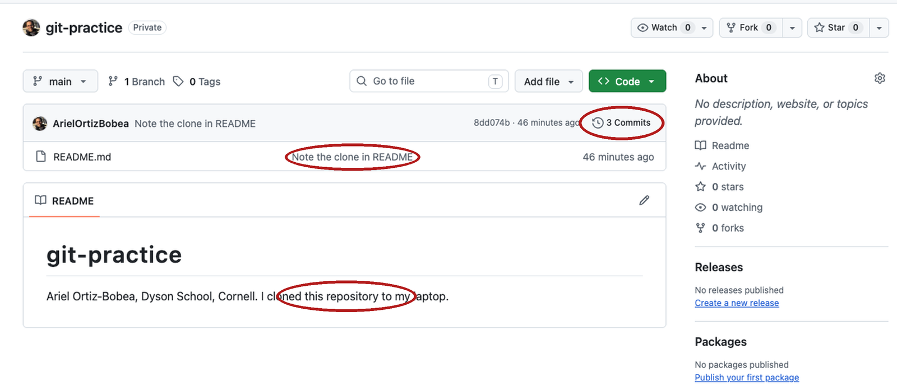
Three commits, and the README ends with your line: what git log shows, in the browser.
Exercise 2
# Exercise 2 (9 minutes). In your git-practice project, Terminal tab,
# browser open on your repository.
#
# 1. Open README.md in RStudio. Add one line at the end:
# My first commit from the terminal.
# Save.
#
# 2. git status. Under which heading is README.md?
# (The two RStudio files stay untracked; Practice 1 commits them.)
#
# 3. git diff. How many added lines (a single + at the left edge,
# green)? (If the prompt disappears, press q.)
#
# 4. git add README.md
# git commit -m "First commit from my laptop"
# Read the second line of the reply.
#
# 5. git push
# Then reload your repository's page on GitHub. How many commits?
#
# Two answers to compare with the room: the second line of git commit's
# reply in step 4, and the commit count after step 5.git status
#> ...
#> Changes not staged for commit:
#> modified: README.md
#>
#> Untracked files:
#> .gitignore
#> git-practice.Rproj
git diff
#> diff --git a/README.md b/README.md
#> ...
#> +++ b/README.md
#> ...
#> +My first commit from the terminal.
git add README.md
git commit -m "First commit from my laptop"
#> [main <new>] First commit from my laptop # your hash differs
#> 1 file changed, 1 insertion(+)
git push
#> ...
#> <old>..<new> main -> main # your two hashes1 file changed, 1 insertion(+); 3 Commits on the front page.
A new file: git diff –staged
git add analysis.R
git diff --staged
#> diff --git a/analysis.R b/analysis.R
#> new file mode 100644
#> index 0000000..a3eb8fb
#> --- /dev/null
#> +++ b/analysis.R
#> @@ -0,0 +1,3 @@
#> +# analysis.R -- days above the PM2.5 standard
#> +STANDARD <- 35
#> +pm <- read.csv("data/epa_pm25_la_fires_2024_2025.csv")- A new file is untracked, and untracked files are not diffed.
statuslists it;addframes it. diff --staged: the frame against the last photo, the next commit exactly./dev/nullis the old version of a file that did not exist.- Read
--stagedbefore every commit: what the shutter will see.
git commit: one change per commit
git commit -m "Add analysis.R with the standard"
#> [main 4977c8d] Add analysis.R with the standard
#> 1 file changed, 3 insertions(+)
git add .gitignore git-practice.Rproj
git diff --staged
#> ...
#> +.Rproj.user
#> +.Rhistory
#> +.RData
#> +.Ruserdata
#> ... # the .Rproj: fourteen lines of settings- One file, three lines: the last diff, counted.
- The two RStudio files, as their own commit.
.gitignoreis four patterns: files git should never track (last slide). - Two logical changes, two photos. If a caption needs the word “and”, it is two.
The timeline so far, and the second push
git commit -m "Add the files RStudio made for the project"
#> [main 7c91799] Add the files RStudio made for the project
#> 2 files changed, 18 insertions(+)
git log --oneline
#> 7c91799 (HEAD -> main) Add the files RStudio made for the project
#> 4977c8d Add analysis.R with the standard
#> 8dd074b (origin/main, origin/HEAD) Note the clone in README
#> 6a952cb add my intro
#> 6a25190 Initial commit
git push
#> ...
#> 8dd074b..7c91799 main -> main- Five photos.
HEAD -> mainis where you are;origin/mainsat two below it until the push. - Read the captions bottom to top and you have the story of the project. That only works if the sentences say something.
The assistant edited your script: read the diff
git status
#> modified: analysis.R
git diff
#> diff --git a/analysis.R b/analysis.R
#> index a3eb8fb..816aaff 100644
#> --- a/analysis.R
#> +++ b/analysis.R
#> @@ -1,3 +1,4 @@
#> # analysis.R -- days above the PM2.5 standard
#> -STANDARD <- 35
#> +STANDARD <- 9
#> pm <- read.csv("data/epa_pm25_la_fires_2024_2025.csv")
#> +stopifnot(nrow(pm) > 0)- Asked for: the
stopifnot. Got: that, and a different standard. - The
-line is the tell. Read removals first. - The transcript says what was meant. The diff says what happened.
git restore: discard the edit
restoreputs the file back to what is staged; nothing is staged, so that is the newest snapshot. No output, then clean. Look at the editor: RStudio reloads the file, the edit is gone.- Destructive. Edits never committed are gone for good. Run
git difffirst, every time, so you know what you are deleting.
Three undo verbs, one per place
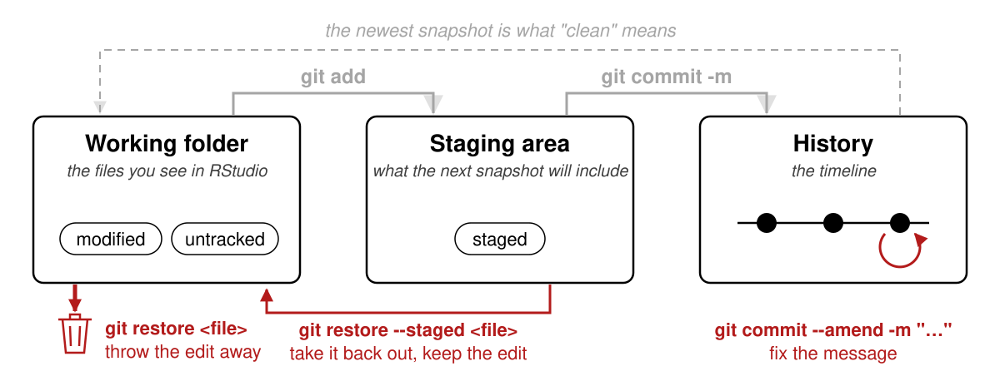
| The change is in | To undo | Command |
|---|---|---|
| the working folder | put the desk back to the last photo; the edit is gone | git restore <file> |
| the staging area | take it out of the frame; it stays on the desk | git restore --staged <file> |
| the last commit, not pushed | rewrite the caption, before it reaches the shared album | git commit --amend -m "…" |
<file> is the file’s name, no brackets: git restore analysis.R.
A commit made on GitHub
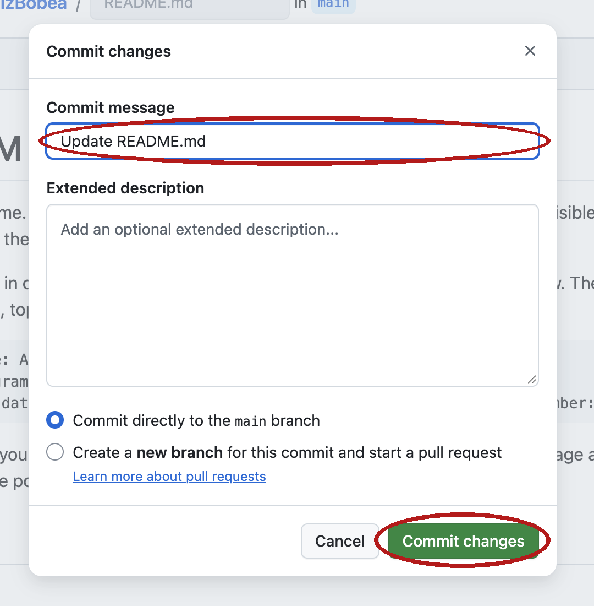
- The pencil and the upload button both make a snapshot on GitHub’s copy.
- GitHub wrote
Update README.md. A message nobody chose, again. - Your laptop does not know yet.
git pull: bring GitHub’s snapshots down
git statussaid up to date and was wrong. status never asks GitHub.pulldownloads what GitHub has that you do not, and applies it.Fast-forward: GitHub’s album was yours plus one photo, so git added it to the end of yours.- Open
README.mdin RStudio: the line is there. Pull when you sit down, push when you stand up.
When push is refused
git push
#> To https://github.com/ArielOrtizBobea/git-practice.git
#> ! [rejected] main -> main (fetch first)
#> error: failed to push some refs to 'https://github.com/ArielOrtizBobea/git-practice.git'
#> hint: Updates were rejected because the remote contains work that you do not
#> hint: have locally. This is usually caused by another repository pushing to
#> hint: the same ref. If you want to integrate the remote changes, use
#> hint: 'git pull' before pushing again.- GitHub has a photo you do not: a browser edit, a coauthor, your other laptop. Each album has one the other lacks.
- The fix is two words: pull, then push. Git may open an editor for a message; keep the suggested one.
- If
pullsaysCONFLICT: stop and ask. Rare in a solo project, and not a disaster.
A branch is a second timeline
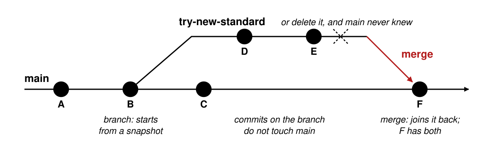
- A branch starts at a snapshot and grows its own snapshots.
mainkeeps working while you experiment. - Merge joins the branch back. Delete it instead and
mainnever knew. analysis_v2.R, done right: the experiment lives beside the working version. Solo, rarely: an experiment, a rewrite, anything a coauthor should read first.
A pull request is a merge with a review attached
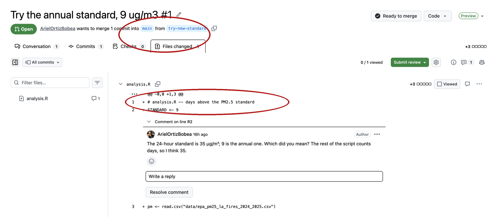
- A manuscript under review. The branch is the submission; comments on lines are the referee’s; Merge pull request is the editor’s accept. Only then does it land on
main. - Not
git pull.git pulldownloads the issue after it is out. A pull request proposes, and waits for a person.
.gitignore: what git should not track
# Data is downloaded by your script; never upload it.
data/
# R session artifacts
.Rhistory
.RData
.Rproj.user/- The do-not-photograph list. A file on it never reaches the frame, the album, or GitHub. Data goes on the list; the script that downloads the data goes in the album.
- One pattern per line; a trailing
/is a folder and everything in it. An ignored file never appears ingit status. .gitignoreis itself committed, so every clone gets the same rules. RStudio wrote the four-line one I committed; yours sits in the Git pane with a yellow?until Practice 1.
Practice
Ten exercises on the session page, with solutions behind a click. All of them run in your git-practice clone or a sandbox repository you make — never in a homework repository.
- 1–3 The loop: add, commit, push, and stage only part of a change
- 4–6 Undoing: discard, unstage, amend
- 7–8 Pull and read: a browser commit, and the push that is refused
- 9–10 A new project with its
.gitignore; an assistant’s diff, printed
Terms: the repository and its copies
| Term | One line |
|---|---|
| repository | a folder plus its timeline of snapshots; the timeline lives in the hidden .git |
| commit, snapshot | one photo of the whole folder, with a caption, an author and a hash |
| commit message | the caption: one sentence that says why |
| hash | the photo’s serial number; seven characters are enough to name it |
| diff | two snapshots side by side, spot the difference: - as it was, + as it is |
branch, main |
git’s word for a timeline; every repository starts with one, called main |
HEAD |
where you are on the timeline |
local, remote, origin |
your copy; a copy elsewhere; git’s name for the GitHub copy it was cloned from |
| clone | download the whole album and remember where it came from |
| push, pull | hand your new photos to the shared album; bring down the ones you lack |
| fast-forward | a pull that only had to add GitHub’s new photos to the end of yours |
| rejected push | GitHub has a photo you do not; pull, then push |
Terms: a change and its places
| Term | One line |
|---|---|
| working folder | the desk: the files as you see them in RStudio; git says working tree |
| staging area | the frame: what the next snapshot will include, each file as it was when you typed add |
| untracked | a file git sees that the timeline has never had |
| modified | a tracked file that differs on disk from the newest snapshot |
| staged | in the frame; part of the next commit |
| clean | the desk matches the newest photo; nothing pending |
| discard, unstage, amend | put the desk back to the last photo; take a file out of the frame; rewrite the last caption, before pushing |
| merge | join a branch back into the one it came from |
| pull request | a merge proposed on GitHub with a review attached; not git pull |
| merge conflict | two snapshots changed the same line; git stops and asks you to choose |
.gitignore |
the do-not-photograph list; a file on it never reaches the frame, the album, or GitHub |
| token, pager | what GitHub accepts from a program instead of a password; the screen for long output, q leaves it |
Quick reference
A repository is a folder plus a timeline of snapshots. Every git command either moves a change toward that timeline, or copies the timeline between your laptop and GitHub.
Every command from today, one line each, on the session page — with the four-places picture next to it, the things that bite, and every term with a link to the section that defines it.
AEM 6850 · Session 7